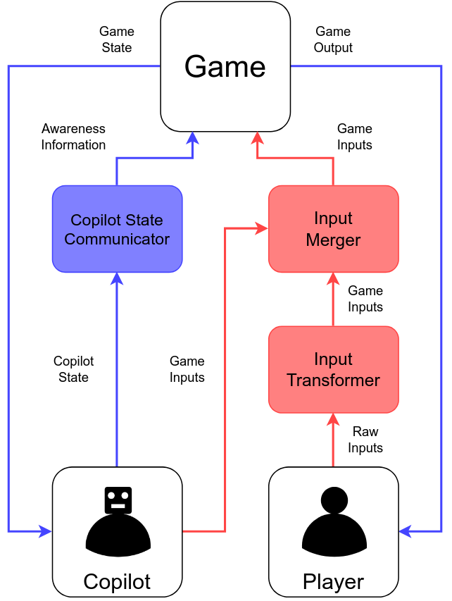
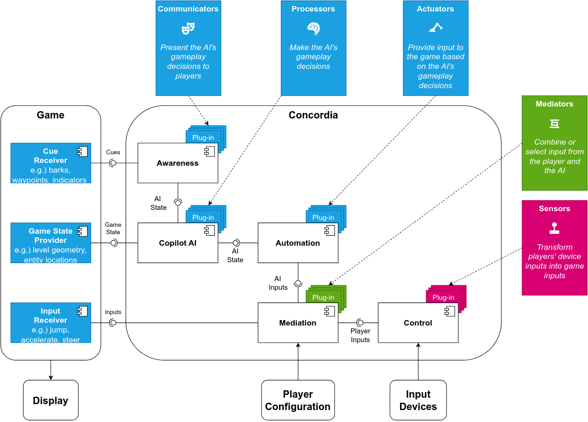
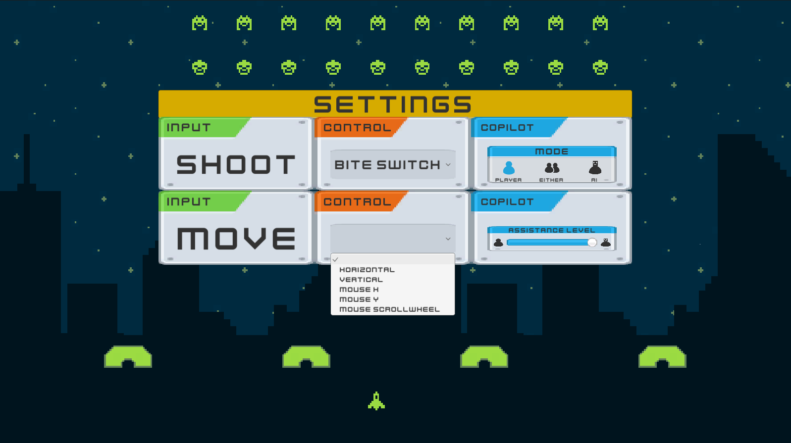

Concordia
Concordia is a reference architecture and C# toolkit for building AI copilots in Unity games. A copilot takes over parts of game input the player can't or doesn't want to handle — movement, aiming, dodging — while the player controls the rest. Concordia makes it practical to build copilots that players can personalize, that communicate their intentions through awareness cues, and that can be redesigned without rebuilding from scratch.

The toolkit separates copilot behaviour into five plug-in types. Processors make the AI's gameplay decisions. Actuators translate those decisions into game inputs. Communicators expose the AI's state as awareness cues. Sensors gather input from the player's devices. Mediators blend or select between player and AI input for each game action. The components are independent — changing how the AI decides what to do doesn't affect how it communicates those decisions or how it controls the game. This encapsulation keeps iterative redesign tractable: a change to the AI's strategy touches a Processor, not the whole system.

Interface Invaders demonstrates the toolkit in a Space Invaders clone. Players can assign any game input to any compatible device — keyboard, gamepad, mouse, DK bongos — or delegate it to the copilot entirely. Awareness cues show which enemy the copilot is targeting and which positions it is avoiding, but only for the inputs the copilot is currently handling. The settings menu exposes all of this without any additional code from the developer.

The architecture emerged from studies with players who needed to control what they could and understand what the AI was doing. Players with motor impairments needed to personalize which inputs they handled and what devices they used. Players who found games difficult needed to understand what the copilot was doing and why. The key insight is that a copilot and player pursuing the same objective can support a wide range of control configurations — from full player control to full delegation — using the same underlying decision-making. Concordia formalizes the design choices that make this work.
GitHub → Open in full window →